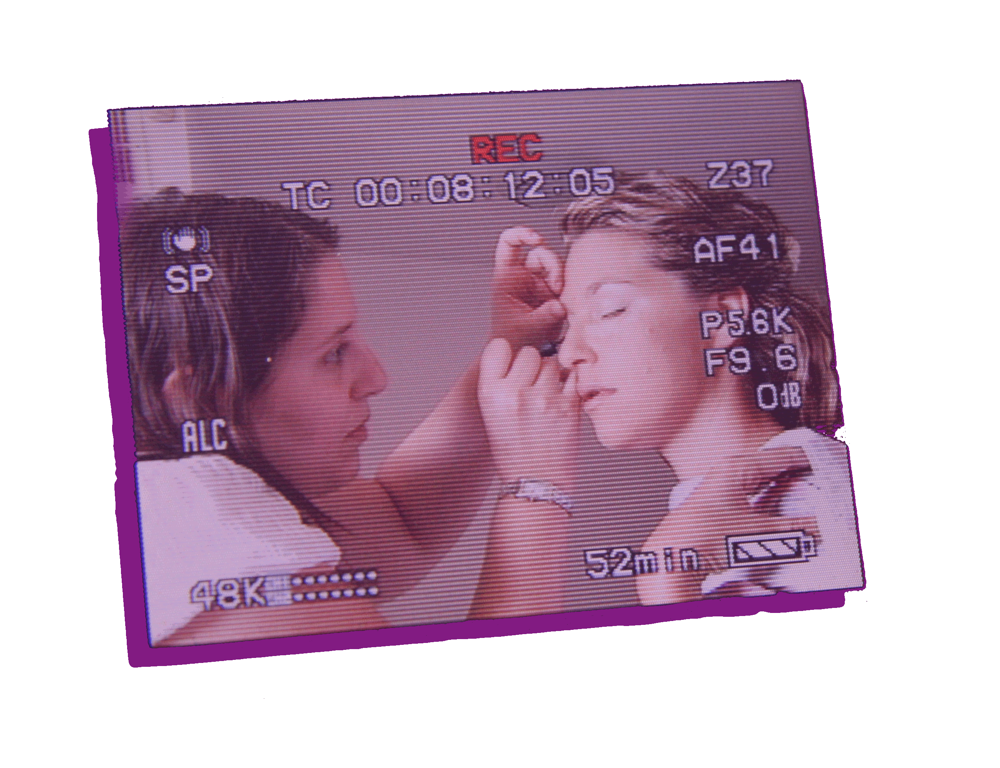

פרופיל
גולשים יקרים שלום,
שמי אושרית לרנר וזהו אתר הבית שלי.
עוד מתקופת התיכון, התעניינתי בתחומי האיפור והקוסמטיקה.
תמיד איפרתי את מכרותיי ואת חברותיי לאירועים, לבילויים ובפורים.
כל סובבי אמרו לי תמיד שאני צריך ללכת ללמוד איפור באופן מקצועי ושאני יכולה להצליח בתחום הזה מאוד.
לאחר שירותי הצבאי החלטתי ללכת בעקבות לבי ולהגשים את חלומי ונרשמתי ללימודי איפור בבית הספר המקצועי "איל מיקיאג'".
עברתי הסמכה במשך שנה ב"מסלול הארוך" שהקנה לי תעודת MP (תואר בינלאומי) וסיימתי בהצטיינות את לימודי.
תחומי ההתמחות שלי באיפור כוללים בין היתר את התחומים הבאים: איפור כלות, אירועים, אופנה, טלויזיה וקולנוע,
סגנונות איפור מתקופות שונות בהיסטוריה, הזקנה, פציעות, איפור במה ותיאטרון, דראג, ציורי גוף ופנים וציור יפני.
בנוסף לעבודות האיפור אותן אני מבצעת,
אני עורכת גם סדנאות איפור אישיות הבאות להסביר וללמד אותך על הסודות הקטנים שיהפכו אותך לנסיכה בדקות.
בעבודותיי אני משתמשת בתכשירי האיפור והקוסמטיקה מהמובילים ביותר.